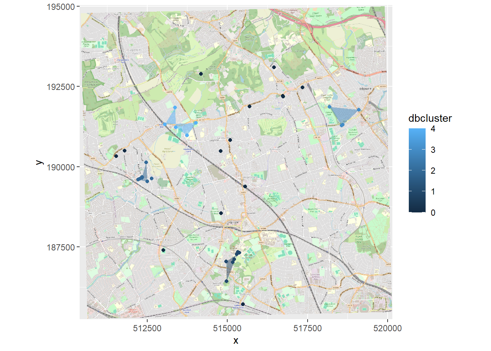

Chapter 5 Local Indicies of Spatial Autocorrelation
5.1 Moran’s I
The only difference is that we now use the function localmoran(). And remember local Moran’s I gives a value for each spatial unit in relation to neigbhours as opposed to global that compares each spatial unit to the neighbours and then gives an average of all the differences identified
I_LWard_Local_Density <- points_sf_joined %>%
pull(density) %>%
as.vector()%>%
localmoran(., Lward.lw)%>%
as_tibble()This outputs a table, so we need to append that back to our sf of the wards to make a map…
points_sf_joined <- points_sf_joined %>%
mutate(density_I =as.numeric(I_LWard_Local_Density$Ii))%>%
mutate(density_Iz =as.numeric(I_LWard_Local_Density$Z.Ii))%>%
mutate(p =as.numeric(I_LWard_Local_Density$`Pr(z != E(Ii))`))We’ll set the breaks manually based on the rule that data points:>2.58 or <-2.58 standard deviations away from the mean are significant at the 99% level (<1% chance that autocorrelation not present); >1.96 - <2.58 or <-1.96 to >-2.58 standard deviations are significant at the 95% level (<5% change that autocorrelation not present). >1.65 = 90% etc…like we saw in the lecture…
breaks1<-c(-1,-0.5,0,0.5,1)
breaks2<-c(-1000,-2.58,-1.96,-1.65,1.65,1.96,2.58,1000)Now create a new diverging colour brewer palette and reverse the order using rev() (reverse) so higher values correspond to red - see https://www.r-graph-gallery.com/38-rcolorbrewers-palettes.html
MoranColours<- rev(brewer.pal(8, "RdGy"))Remember Moran’s I - test tells us whether we have clustered values (close to 1) or dispersed values (close to -1) of similar values based on the spatial weight matrix that identifies the neighoburs
But… the z-score shows were this is unlikely because of complete spatial randomness and so we have spatial clustering (either clustering of similar or dissimilar values depending on the Moran’s I value) within these locations…
tm_shape(points_sf_joined) +
tm_polygons("density_I",
style="fixed",
breaks=breaks1,
palette=MoranColours,
midpoint=NA,
title="Local Moran's I")
tm_shape(points_sf_joined) +
tm_polygons("density_Iz",
style="fixed",
breaks=breaks2,
palette=MoranColours,
midpoint=NA,
title="Local Moran's I Z-score")
5.2 Getis Ord \(G_{i}^{*}\)
What about the Getis Ord \(G_{i}^{*}\) statistic for hot and cold spots? - this just contains the z-score (standardised value relating to whether high values or low values are clustering together)
Gi_LWard_Local_Density <- points_sf_joined %>%
pull(density) %>%
as.vector()%>%
localG(., Lward.lw)
points_sf_joined <- points_sf_joined %>%
mutate(density_G = as.numeric(Gi_LWard_Local_Density))And map the outputs…
GIColours<- rev(brewer.pal(8, "RdBu"))
#now plot on an interactive map
tm_shape(points_sf_joined) +
tm_polygons("density_G",
style="fixed",
breaks=breaks2,
palette=GIColours,
midpoint=NA,
title="Gi* Z score")
5.3 Note
In the analysis you might see a Moran plot where the values of our variable (density of pharmacies) and plotted against (on the y axis) the spatially lagged version (the average value of the same attribute at neighboring locations). However this plot below shows the value of density in relation to the spatial weight matrix…
This is useful as we can express the level of spatial association of each observation with its neighboring ones. Points in the upper right (or high-high) and lower left (or low-low) quadrants indicate positive spatial association of values that are higher and lower than the sample mean, respectively. The lower right (or high-low) and upper left (or low-high) quadrants include observations that exhibit negative spatial association; that is, these observed values carry little similarity to their neighboring ones. Source: https://documentation.sas.com/doc/en/pgmsascdc/9.4_3.4/statug/statug_variogram_details31.htm#:~:text=The%20Moran%20scatter%20plot%20(Anselin,known%20as%20the%20response%20axis.
Moran_plot_LWard_Global_Density <- points_sf_joined %>%
pull(density)%>%
as.vector()%>%
moran.plot(., Lward.lw)
When you see Moran’s I out in the wild you will come across maps with:
- high values surrounded by high values (HH)
- low values nearby other low values (LL)
- low values among high values (LH)
- high values among low values (HL)
Here, we use the values we have, of density and Moran’s I, compared to the mean of density and Moran’s I (termed centering). Where the
value of density is greater than 0 and the value of Moran’s I is greater than 0 then high values (of density) are surrounded by other high values (from Moran’s I)= HH
value of density is lower than 0 and the value of Moran’s I is lower than 0 then low values (of density) are surrounded by other low values (from Moran’s I) = LL
value of density is lower than 0 and the value of Moran’s I is higher than 0 then low values (of density) are surrounded by high values (from Moran’s I) = LH
value of density is higher than 0 and the value of Moran’s I is lower than 0 then high values (of density) are surrounded by high values (from Moran’s I) =HL
signif <- 0.1
# centers the variable of interest around its mean
points_sf_joined2 <- points_sf_joined %>%
mutate(mean_density = density- mean(density))%>%
mutate(mean_density = as.vector(mean_density))%>%
mutate(mean_densityI= density_I - mean(density_I))%>%
mutate(quadrant = case_when(mean_density>0 & mean_densityI >0 ~ 4,
mean_density<0 & mean_densityI <0 ~ 1,
mean_density<0 & mean_densityI >0 ~ 2,
mean_density>0 & mean_densityI <0 ~ 3))%>%
mutate(quadrant=case_when(p > signif ~ 0, TRUE ~ quadrant))
brks <- c(0,1,2,3,4,5)
colors <- c("white","blue","skyblue","pink","red")
tm_shape(points_sf_joined2) +
tm_polygons("quadrant",
style="fixed",
breaks=brks,
labels = c("insignificant","low-low","low-high","high-low","high-high"),
palette=colors,
title="Moran's I HH etc")
Source: https://rpubs.com/quarcs-lab/spatial-autocorrelation
This might seem somewhat confusing as if we look in the South East we have low values of Getis Ord \(G_{i}^{*}\) yet we have shown that these are low (density) and high Moran’s I. But as Matthew Peeples concisely summarises remember…
Moran’s I is a measure of the degree to which the value at a target site is similar to values at adjacent sites. Moran’s I is large and positive when the value for a given target (or for all locations in the global case) is similar to adjacent values and negative when the value at a target is dissimilar to adjacent values.
Getis Ord \(G_{i}^{*}\) identifies areas where high or low values cluster in space. It is high where the sum of values within a neighborhood of a given radius or configuration is high relative to the global average and negative where the sum of values within a neighborhood are small relative to the global average and approaches 0 at intermediate values.
So here we have a high Moran’s I as the values around it are similar (probably all low) but a low Getis Ord as the values within the local area are low relative to the global average.